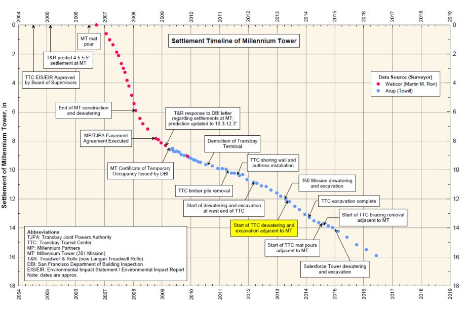
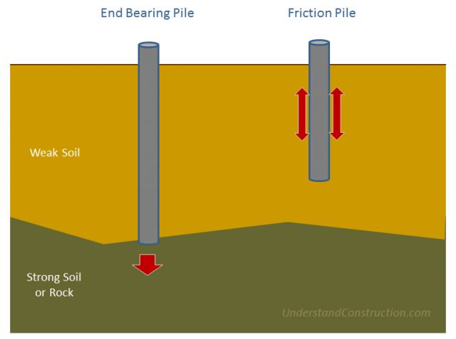
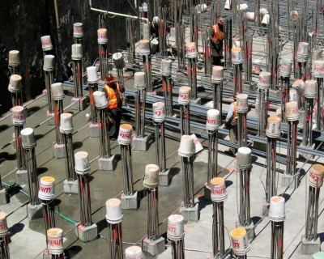

The Case of Millennium Tower
The 58-story Millennium Tower is the tallest residential building in San Francisco. The US$350 million project was designed by Handel Architects and constructed by Webcor Builders. The 645 feet skyscraper constructed between 2005 to 2008 was found to be sinking and tilting in 2016. Subsequently, the City of San Francisco filed suit against the tower’s developer, claiming that the developers withheld information on the sinking problems from potential apartment buyers.
Who’s to blame?
The tenants and residents of the Millennium Towers are blaming the developers and the developers are blaming the Transbay Joint Powers Authority for excavating a tunnel near the foundation of the tower.
A NBC Bay Area News investigation showed that the leaning and sinking Millennium Tower’s troubles may have been avoided had the city building officials heeded experts’ warnings.
Most experts say the poor foundation of the tower resulted in the sinking and tilting of the tower. The foundation of the tower is concrete slab built on concrete friction piling into the mud fill and sand. This foundation can also be called as floating pile foundation which is not usually recommended for large constructions like this.

Mikeyouse comments on the image above-
“Friction piles are typically fine, even in earthquake-prone areas. The Millennium Tower’s biggest issue is that it’s a reinforced concrete structure instead of a steel structure. Where newer steel buildings have pressures of ~2000lbs – 3000lbs per square foot, the Millennium Tower is more like 15000 lbs per square foot. The engineers knew this would be problematic and hard designed measures to prepare up to 6 inches of sinkage over time. It was designed to sink 5 inches over its lifetime. It sunk 8 inches before it was opened. It sunk a further 8 inches in the past six years.”

Pic Courtesy: notey.com
So what is the role of the Geotechnical Engineer in projects like these?
Geotechnical engineering is the study of the behaviour of soil under the influence of loading forces and soil-water interactions. The geotechnical engineer is answerable for the safety of his team and the public during and after construction. He investigates the site for various risk factors like natural disasters that the site is prone to viz. earthquake, landslides, rock falls, etc. His investigation includes assessment of soil, rock and bedrock properties, etc. on the construction site. Apart from this, the geotechnical engineer is also responsible for designing excavation, landfills and stabilising natural slopes to ensure public safety.
The skyscraper is built in the South of the Market city, San Francisco. A geotechnical engineer is aware that the large structure like Millennium Tower requires a strong foundation that hits the bedrock. But in this case, the builders opted for 60 and 90 feet friction piles instead of end-bearing piles that take 200 feet to reach the rock.

Pic Courtesy: notey.com
Would a peer review have helped?
The Millennium tower has now settled 16 inches and tilted 2 inches to the north-west. This could have been avoided if they had taken action at initial stages. The developers definitely had a geotechnical engineer in their construction team but not they did not employ the peer reviewer. A geotechnical engineer can accurately calculate the anticipated movement of the structure in advance thus prevent further damage.
Whatever the truth, the developers could have avoided this sinkage if the builders had hired an efficient peer geotechnical reviewer and used end-bearing piles instead of friction piles.